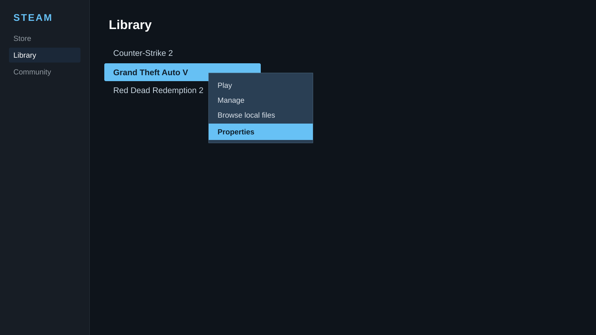
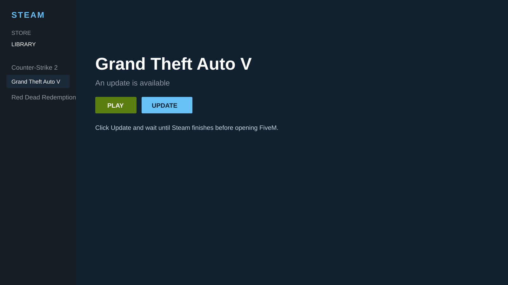
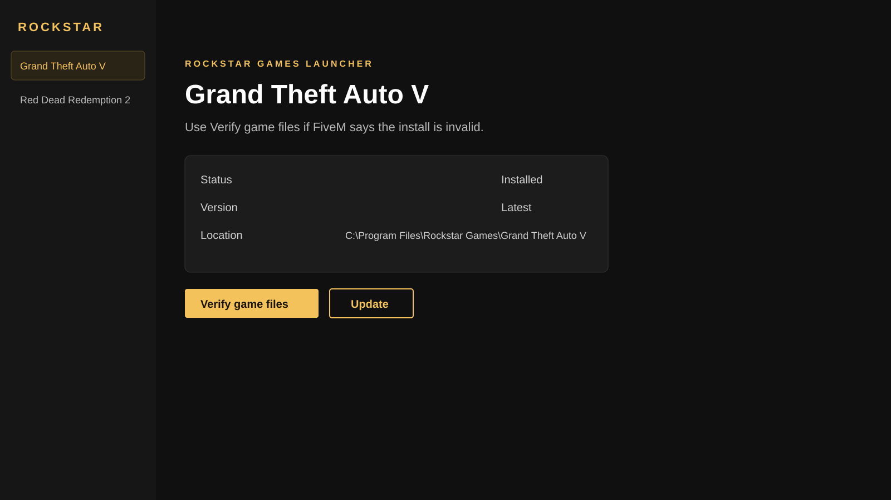

STEAM
Open GTA V properties
- Open Steam.
- Go to Library.
- Right-click Grand Theft Auto V.
- Click Properties.
Broken or old game files make FiveM and shaders crash. Use Steam or Rockstar to repair and update.
Windows may show SmartScreen on the helper. The Steam helper only asks Steam to validate Grand Theft Auto V (app 271590). The Rockstar helper only opens the official launcher.



Rockstar does not offer a one-click verify link like Steam. The helper opens the launcher. You still click Verify / Update there.

GTA5.exe if Steam replaced them.